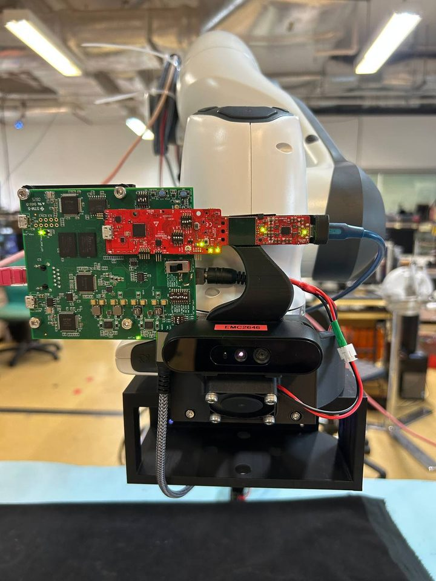
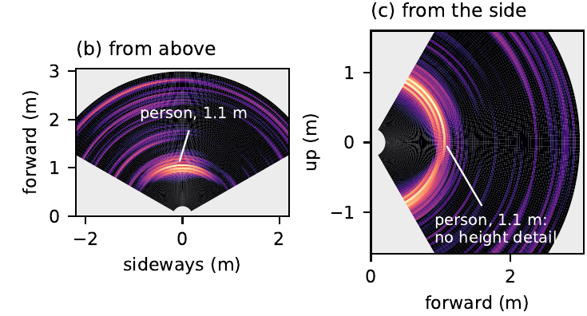
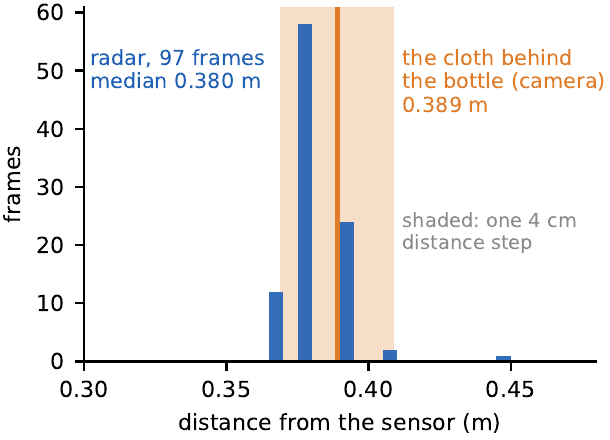

The idea
The project began as fusion of a 60 GHz mmWave radar with an RGB-D camera on the gripper. At 60 GHz the wavelength is about 5 mm, and glass and plastic reflect the radar's signal where they let a depth camera's light through. The radar was to find the transparent objects the camera misses.
The question
The radar pipeline ran on the Jetson, from raw samples to range maps seen from above and from the side. The next step would have been a labelled dataset of transparent objects to train a detector, which would have taken months. So the project first tested whether this radar, at its best settings, could separate objects on a table at all. A detector cannot find objects that the sensor itself merges.
A large target

Experiment 1: one transparent bottle
Can the radar measure the distance of an object the camera has already found? A transparent plastic bottle was placed on a dark cloth. A segmentation model outlined the bottle in each camera frame, and the radar detections inside the outline gave its distance.

The radar measured a distance consistently, but it could not tell the bottle from the cloth behind it. Nor did it locate the bottle: the camera found the bottle and selected its echo.
Experiment 2: two objects
Grasping needs the radar to separate neighbouring objects. An opaque flask and a transparent bottle stood 25 cm apart, centre to centre, at about 0.55 m. They were about one beam width apart, so the test was at about the predicted limit.

The radar did not separate them. Its map shows one broad band at their distance, and its strongest echo comes from the gap between them, where there is no object. At that distance the echo peaks at +2°, and both objects sit about 5 dB lower on either side with no clear dip between them. Because the one dominant peak lies between the objects, no detector can find two objects in it, and objects that stand closer together would merge in the same way.
Why the radar work stopped
- The antenna array is too small. Cross-range resolution is roughly Rλ/L for an aperture L at distance R. Separating 6 to 7 cm objects at 0.5 m needs an aperture of about 5 cm, and separating them cleanly when they stand 5 cm apart needs about 25 cm. This chip's aperture is 1 cm, 5 to 25 times too small, and no chirp profile, beamformer or detector changes it.
- Better processing did not help. On the single-bottle recording, the standard CFAR detector flagged 7 to 16 % of all cells at every threshold, and Capon beamforming gave unstable output on a static scene. That recording's heatmap has a useful contrast of only about 17 dB, spread across a few strong reflectors.
- The learned detector did not transfer. REXO had been trained on a radar with 1.3° resolution and another rig's camera placement, and here it placed its box beside the person.
- A synthetic aperture is too slow. Moving one radar to emulate a wider array, as FuseGrasp does, takes about 30 s per scan, and its depth error triples when the arm's position noise grows from 0.1 to 1 mm.
Revisiting radar would need a cascaded radar with about 1° in azimuth, or a synthetic aperture fast and precise enough for a grasping loop. Experiment 1 already had the shape of the camera approach that followed: find the object with a segmenter, then recover its depth.